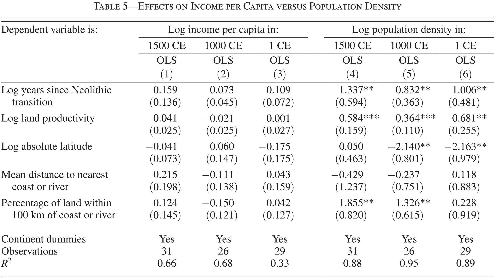
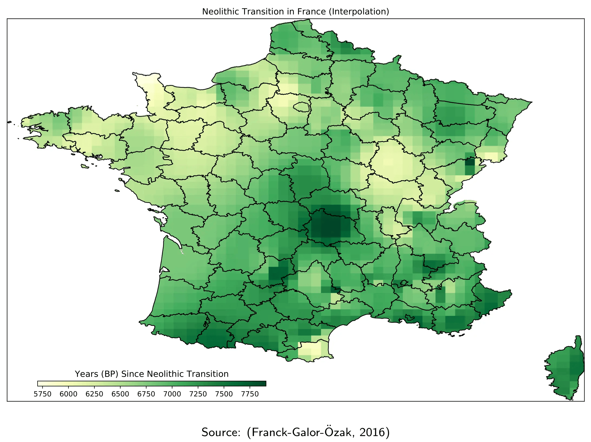

3 Agriculture et inégalités: Diamond (1997)
Selon Jared Diamond (1997), derrière les inégalités entre pays on trouve certains facteurs qui se sont déclenchés pendant la révolution Néolithique, c’est-à-dire, à partir de l’adoption de l’agriculture. Or, pour comprendre pourquoi y a-t-il des régions développées et en développement, il faut connaître pourquoi l’agriculture est apparue et adoptée dans certaines régions du monde tandis qu’autres ont continué à obtenir leurs calories parmi la chasse et la récollection des fruits.
3.1 Chasseurs cueilleurs vs agriculture
Aujourd’hui, quelques groupes ethniques continuent à vivre comme les chasseurs cueilleurs. Ces populations montrent très peu de différences entre habitants: ils reçoivent plus ou moins la même quantité de nourriture et ils participent aux différentes activités. Notamment, c’est qui est important est la manque d’un groupe de personnes complètement détachés des activités liées à la production (de nourriture).
Opposé à cette situation, on trouve les sociétés agricoles. C’est que distingue les unes des autres est la productivité du travail: avec la maîtrise de l’agriculture, la productivité marginale du travail (en termes de calories) augmente, c’est qui permet qu’une partie de la population soit détachée de l’agriculture. Ainsi, les sociétés agricoles produissent les calories nécessaires pour la survie de toute la population avec moins de fermiers. La plus grande productivité leur permet de générer un surplus qu’est utilisé pour nourrir aux non fermiers: les bureaucrates, prêtres, savants, penseurs, etc. À noter que les activités des non-fermiers sont de nature mentale. L’exercice de ces activités facilite l’invention de l’écriture, la pensée scientifique (mathématique, géométrie, astronomie, etc.) et le développement technologique. Enfin, comme le passage vers l’agriculture a lieu en époque Malthusienne, il est possible d’argumenter que les premières sociétés à l’adopter ont un avantage car ces sociétés accumuleront technologie davantage, produiront plus et augmenteront la population, fait que renforce le développement technologique en un cercle vertueux.
3.2 L’apparition de l’agriculture
Selon les données archéologiques, l’agriculture a apparu en multiples occasions à travers le monde avec une variation temporelle. Après chaque invention originale, elle s’est rependue aux alentours. Les premières traces d’agriculture (Price and Bar-Yosef 2011) apparaissent au croissant fertile (10 000 BP) et en Amérique centrale (10 000 - 8 000 BP), en Chine (8 000 BP), en Amérique du Sud (8 000 BP - 6 000 BP), Nouvelle Guinée (7 000 BP), Inde, Amérique du Nord et Afrique équatoriale (4 000 BP - 2 000 BP).1
Ensuite, l’agriculture s’est rependu aux régions limitrophes des zones originales. La dispersion de l’agriculture depuis les zones originales n’était pas homogène et dépendait de facteurs géographiques.
- Climat favorable similaire à l’original. Un climat proche ã celui des zones de première agriculture assure que les plantes poussent, et donc, il est plus probable que l’agriculture soit adopté de manière préférentielle en zones qui partagent un climat similaire.
- Le climat est similaire le long d’une même latitude. Ainsi, il est plus facile que l’agriculture se répand dans un continent avec orientation est ouest que dans un continent à orientation nord sud.
- Par exemple, le riz africain aurait pu se cultiver dans le climat méditerranéen de l’Afrique du Sud. Mais une vaste zone tropicale sépare le Nord du Sud de l’Afrique, avec un climat complètement différent et inhospitalier pour le riz. C’est pareil pour le tournesol, native d’Amérique du Nord et qui aurait pu être cultivé en région Andine. Malheureusement, entre les deux il y a toute une gamme de climats différents qui rend plus difficile son expansion.
- Le climat est similaire le long d’une même latitude. Ainsi, il est plus facile que l’agriculture se répand dans un continent avec orientation est ouest que dans un continent à orientation nord sud.
- Barrières physiques: Les sèment ne se répandissent pas automatiquement: il faut les transporter. Un facteur qui facilite l’expansion de l’agriculture sur le plan géographique est la possibilité de franchir grandes distances de manière facile.
- C’est le cas, par exemple, en Europe continentale et l’est de l’Asie, avec des grandes plaines. Par contre, en Californie, l’agriculture a pris du temps à se développer, ce qui peut paraitre étonnant car en même latitude mais à l’est du continent, ou moins quatre plates ont été domestiqués 4 000 BP. Mais, le centre les États-Unis est une région sèche, avec des déserts et grandes chaînes de montagnes, qui font plus difficile la transmission de l’agriculture.
3.3 Les effets d’une agriculture précoce
3.3.1 Densité de population, technologie et revenu
Selon le modèle unifié de croissance économique (et selon Diamond), les régions qui ont adopté en premier l’agriculture ont eu un avantage sur les autres. Ainsi, la productivité additionnelle due à l’agriculture aurait permis deux choses:
- Augmenter la population: on devrait observer une plus grande densité de population en zones agricoles.
- Permettre l’existence d’une classe de non fermiers qui peuvent développer la technologie.
Ashraf and Galor (2011) vérifient ces points, montrant qu’en effet, les régions qui développèrent avant l’agriculture présentent une plus grande densité de population pendant la période Malthusienne et, aussi, un plus grand avancement technologique.

Par contre, et en accord avec la théorie, les régions précoces en agriculture n’auraient pas éteint plus de revenu per capita en époque Malthusienne. Rappelons que, selon le modèle unifié de croissance économique, en époque Malthusienne plus de revenu se traduit par une plus grande densité de population et non par plus de revenu per capita.

3.3.2 Densité de population et maladies
Les effets de la révolution Néolithique touchent aussi directement la santé des hommes.2 Ils apparaisent de manière indirecte à cause de la densité de population. Ainsi, selon Diamond, une plus grande densité de population implique que les virus peuvent se transmettre plus facilement entre les gens. En plus, l’agriculture est typiquement relationée avec l’enlevage. Donc, vu qu’on habitait près des annimaux, il existe une plus grande probabilité qu’un virus animalier mute et affecte les hommes, comme c’est le cas avec la COVID-19. Or, on espère une plus grande incidence des maladies infectieuses parmi les régions qu’ont adopté l’agriculture plus tôt. Alors, si on fassait une telle régression, on obtiendrait des résultats contraires à nos attentes.
Cette manque de résultats, apparement contradictoire avec nos expectatives, peut s’expliquer par la sélection naturelle. Ceci c’est l’argumentaire de Galor and Moav (2007). Vu qu’en société agricole le risque d’attraper une maladie infectieuse est plus important, les gens equipés avec un système immun plus réactif (dû aux mutations génétiques aléatoires) auront une plus grande probabilité de survie et, pour tant, de se réproduir. Ainsi, les gènes permettant ce système immun plus réactif seront plus transmis, et une génétique plus résistante vers les maladies infectiuses deviendra dominante parmi la population. Or, la raison pour laquelle les descendants des premiers agriculteurs ne montrent pas une plus grande incidence des maladies infectiuses est le fait qu’ils descedent de ce qui ont survecu, et donc, de ce qui avait un système immun plus efficace.
En revanche, il est possible de vérifier cette hypothèse. L’effet protecteur d’un système immun plus réactif est clair. Malheureusement, il implique qu’on est plus susceptible de souffrir des maladies auto-immunes comme la diabètes, la maladie de Chron, etc. Ainsi, si l’hypothèse est certe, on espère qu’il existe: * Une corrélation négative entre le moment auquel l’agriculture fut adopté et les maladies infectiuses. * Une corrélation positive entre le moment auquel l’agriculture fut adopté et les maladies auto-immunes. * Aucune corrélation entre le moment auquel l’agriculture fut adopté et autre type de maladies.
Galor and Moav (2007) et Franck et al. (2022) valident ces hypothèses.
Note: en référence aux maladies auto immunes, les auteurs se focalisent sur la France et ils interpolent le temps depuis le passage à l’agriculture.

Le fait que l’agriculture se soit développé en première dans ces régions est dû à l’existence d’espèces susceptibles d’être domestiqués, autant pour les plantes que pour les animaux.↩︎
Certains aspects liées à la santé jouent un rôle important dans la détermination de l’investissement dans l’éducation à travers de leurs effets sur l’espérance de vie.↩︎